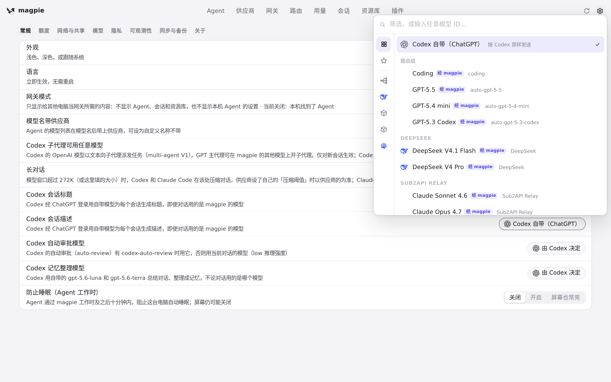

#1198 界面预览
commit ac79156 · 回到 PR · 在「设置 › 常规」新增一行「Codex 会话描述」，可选择让 Codex 的 thread_description 请求走 Codex 自带（ChatGPT）还是指定某个 magpie 模型/路由组；同时把 thread_description 记为独立的「描述」用途，供用量与路由视图识别。
红线是鼠标走过的轨迹，红色圆环是一次点击；底部文字是这一步在做什么。空格暂停，← → 逐段查看。
 设置里的「Codex 会话描述」行与模型选择 · 「Codex 会话描述」行在读设置里的样子
设置里的「Codex 会话描述」行与模型选择 · 「Codex 会话描述」行在读设置里的样子

设置里的「Codex 会话描述」行与模型选择 · 展开的选择器：Codex 自带（ChatGPT）与可选模型
设置里的「Codex 会话描述」行与模型选择 · 选定之后这一行的显示
用量里按用途区分请求的位置 · 用量 › 请求：按用途筛选请求的地方